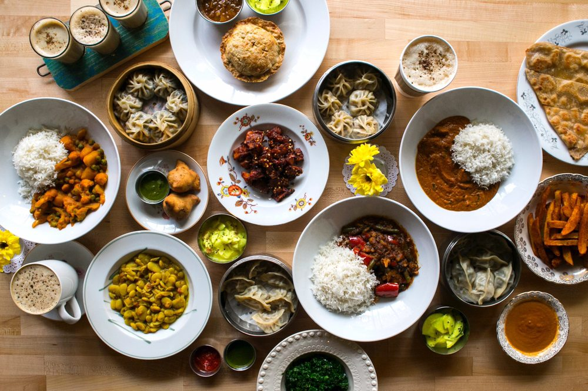
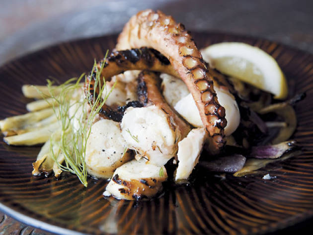

The purpose of this page to provide a lot of different resturants you will be able to visit in Chicago.
This site offers a lot of food choices simply use the dropdown to select your choice.
Here is are the following options for the best top 10 American restaurants in Chicago. These have been ranked by the people and are fairly accucrate. You can visit the links listed below to review more information on each restaurants.

Here is are the following options for the best top 10 Chinese restaurants in Chicago. These have been ranked by the people and are fairly accucrate. You can visit the links listed below to review more information on each restaurants.
Here is are the following options for the best top 10 Indian restaurants in Chicago. These have been ranked by the people and are fairly accucrate. You can visit the links listed below to review more information on each restaurants.

Here is are the following options for the best top 10 Greek restaurants in Chicago. These have been ranked by the people and are fairly accucrate. You can visit the links listed below to review more information on each restaurants.
